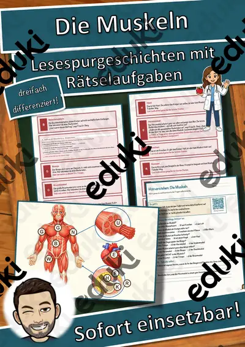

Materialpaket Winter und Advent für die 7. Klasse: 10 Lesespurgeschichten mit Rätselaufgaben fächerübergreifend (Weihnachtsoratorium, Südpol, Eishockey & mehr)
10 Lesespuren für die 7. Klasse – im Paket günstiger als einzeln
Mit diesem Materialpaket bekommst du 10 meiner Lesespurgeschichten für die 7. Klasse fächerübergreifend rund um Winter und Advent – von Musik, Geschichte und Religion über Biologie, Physik und Erdkunde bis zu Sport und Mathematik in einem Download. Alle Lesespuren sind sofort einsetzbar, dreifach differenziert (leicht ★ / mittel ★★ / schwer ★★★) und jeweils in Farbe und Schwarz-Weiß enthalten. So arbeitet deine ganze Klasse am selben Thema, und jedes Kind liest auf seinem Niveau.
Preisvorteil: Einzeln gekauft kosten die 10 Materialien regulär zusammen 39,90 €. Im Paket zahlst du nur 26,49 € und sparst damit rund 34 %.Die 10 Materialien im Paket
Das Lebkuchenhaus – Quader, Netz und Oberfläche (Klasse 7 – Mathematik): Emir und Lotta aus der 7b bauen Lebkuchenhäuser für den Weihnachtsbasar – er will sofort schneiden, sie zuerst rechnen.
Das Weihnachtsoratorium – Chor, Arie und Rezitativ (Klasse 7 – Musik): Mira und Jonas aus der 7c erleben mit der Kantorin und dem Pauker, wie das Weihnachtsoratorium klingt – von den Pauken am Anfang bis zum Schlusschoral.
Der Wettlauf zum Südpol – eine Expedition ins ewige Eis (Klasse 7 – Erdkunde): Die passende Lesespur für Erdkunde in Klasse 7 (auch 6 und 8), auch für Geschichte – ideal im Dezember zum Jahrestag der Südpol-Erreichung, zu Polargebieten und Klimazonen, für Stationenlernen oder Vertretungsstunden.
Der Winterschlaf (Klasse 7): Wildtierforscherin Frau Laub führt Mia und Tom Schritt für Schritt durch einen Wildpark im Herbst – von der Waage über Igelnest, Fledermaushöhle, Murmeltierbau, Siebenschläferhöhle, Eichhörnchenkobel, Bärenhöhle und Froschteich bis zur Messstation.
Die Wintersonnenwende – warum der Dezember so dunkel ist (Klasse 7 – Physik/Erdkunde): Dezember, zu Erde, Sonne und Jahreszeiten, für Stationenlernen oder Vertretungsstunden.
Ein Winter im Dorf des Mittelalters – Bauern und Grundherr (Klasse 7 – Geschichte): Die Bauerntochter Agnes erzählt, wie ihre Familie den langen Winter übersteht – mit Vorräten, Spinnstube, Mühle und Abgaben an den Grundherrn.
Eishockey – schnell, hart und fair (Klasse 7 – Sport): Die passende Lesespur für Sport in Klasse 7 (auch 6 und 8) – ideal im Winter, als Theorieeinheit zu Regeln und Fairness, bei Hallenausfall, für Stationenlernen oder Vertretungsstunden.
Regional oder importiert – Obst und Gemüse im Winter (Klasse 7 – Erdkunde): Die passende Lesespur für Erdkunde/Geographie in Klasse 7 (auch 6 und 8) – ideal im Winter, als Einstieg ins Thema Herkunft von Lebensmitteln, Transportwege und Klimaschutz, für Stationenlernen, Exkursionsvorbereitung oder Vertretungsstunden.
Warum Eis schwimmt – die Anomalie des Wassers (Klasse 7 – Physik): Die passende Lesespur für Physik in Klasse 7 (auch 6 und 8) – ideal im Winter zu Wärmelehre, Dichte und Sicherheit am Eis, für Stationenlernen oder Vertretungsstunden.
Wichern und der Adventskranz – Hilfe für Kinder in Not (Klasse 7 – Ethik): Die passende Lesespur für Ethik und Religion in Klasse 7 (auch 6 und 8) – ideal in der Adventszeit, zum Thema Verantwortung und Hilfe für Menschen in Not, für Stationenlernen oder Vertretungsstunden.
Lehrplanbezug (LehrplanPLUS Bayern, Mittelschule, Jahrgangsstufe 7)Deutsch – Lesen, mit Texten und weiteren Medien umgehen: Die Kinder lesen sinnentnehmend, wenden Lesestrategien an und entnehmen gezielt Informationen, denn nur wer genau liest, findet die nächste Station.
Deutsch – Sprechen und Zuhören: Das Hörverstehen per QR-Code schult konzentriertes Zuhören; Gespräche über Bräuche und Sachthemen fördern das Erzählen und Begründen.
Deutsch – Schreiben: Die Kinder beantworten Fragen schriftlich, füllen Steckbriefe aus und notieren Lösungen.
Mathematik: Das Lebkuchenhaus – Quader, Netz und Oberfläche
Musik: Das Weihnachtsoratorium – Chor, Arie und Rezitativ
Erdkunde: Der Wettlauf zum Südpol – eine Expedition ins ewige Eis, Regional oder importiert – Obst und Gemüse im Winter
Sachfach: Der Winterschlaf
Physik/Erdkunde: Die Wintersonnenwende – warum der Dezember so dunkel ist
Geschichte: Ein Winter im Dorf des Mittelalters – Bauern und Grundherr
Sport: Eishockey – schnell, hart und fair
Physik: Warum Eis schwimmt – die Anomalie des Wassers
Ethik: Wichern und der Adventskranz – Hilfe für Kinder in NotSo funktioniert eine Lesespur
Die Kinder lesen ab START einen kurzen Abschnitt. Am Ende verrät ein Hinweis den nächsten Ort, den sie auf dem farbigen Plan suchen. Dort lesen sie weiter. An jeder richtigen Station sammeln sie einen Buchstaben, und eingeplante Sackgassen dienen der Selbstkontrolle. Am Ende ergeben die umgestellten Buchstaben ein geheimes Lösungswort.
Das ist in jeder Lesespur enthalten
Lesespurgeschichte in 3 Niveaus (leicht ★, mittel ★★, schwer ★★★)farbiger Plan als Suchkarte
Rätselaufgaben auf dem Weg, z. B. Zuordnen, Quiz, Rechenaufgabe und Steckbrief
Hörverstehen mit QR-Code zum Hörtext
Rätselseite mit Wörter-Suchsel und Wissensfragen
Ausmalbild zum Themaausführliches Lösungsblatt für die Lehrkraftalles zusätzlich als drucksparende Schwarz-Weiß-Variante
Insgesamt umfasst das Paket 494 Seiten.
Einsatzmöglichkeiten
Alle Materialien passen von Ende November bis Februar, auch als Thema der Woche, Werkstatt oder für die Adventszeit. Du kannst sie im Stationenlernen, in Freiarbeit und Wochenplan, in der Leseförderung und in Förderstunden einsetzen. In Vertretungsstunden funktionieren sie ohne Vorbereitung. Sie eignen sich für alle Schulen in allen Bundesländern.
Viel Freude mit deiner Klasse wünscht dir Snice!
Ähnliche Materialien

Rauchen und Vapes – warum Nikotin abhängig macht – Lesespurgeschichte mit Rätselaufgaben (Klasse 7)

Organspende – eine Entscheidung fürs Leben – Lesespurgeschichte mit Rätselaufgaben (Klasse 7)

Der Winterschlaf – Lesespurgeschichte mit Rätselaufgaben (Klasse 7)

Der Vogelzug – Lesespurgeschichte mit Rätselaufgaben (Klasse 7)

Die Zähne – Lesespurgeschichte mit Rätselaufgaben (Klasse 7)

Das Ohr – Lesespurgeschichte mit Rätselaufgaben (Klasse 7)

Das Auge – Lesespurgeschichte mit Rätselaufgaben (Klasse 7)
